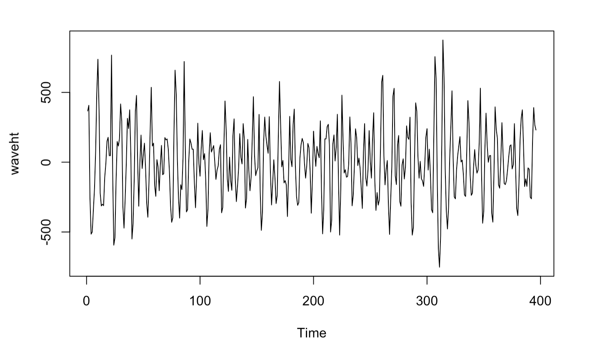
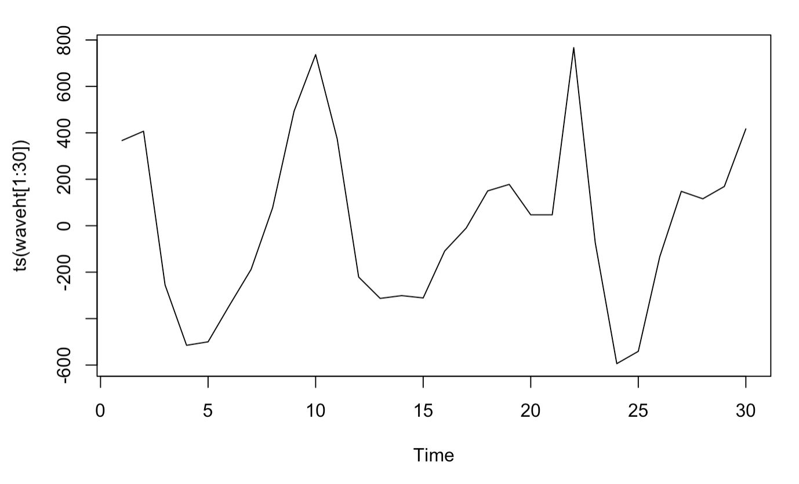
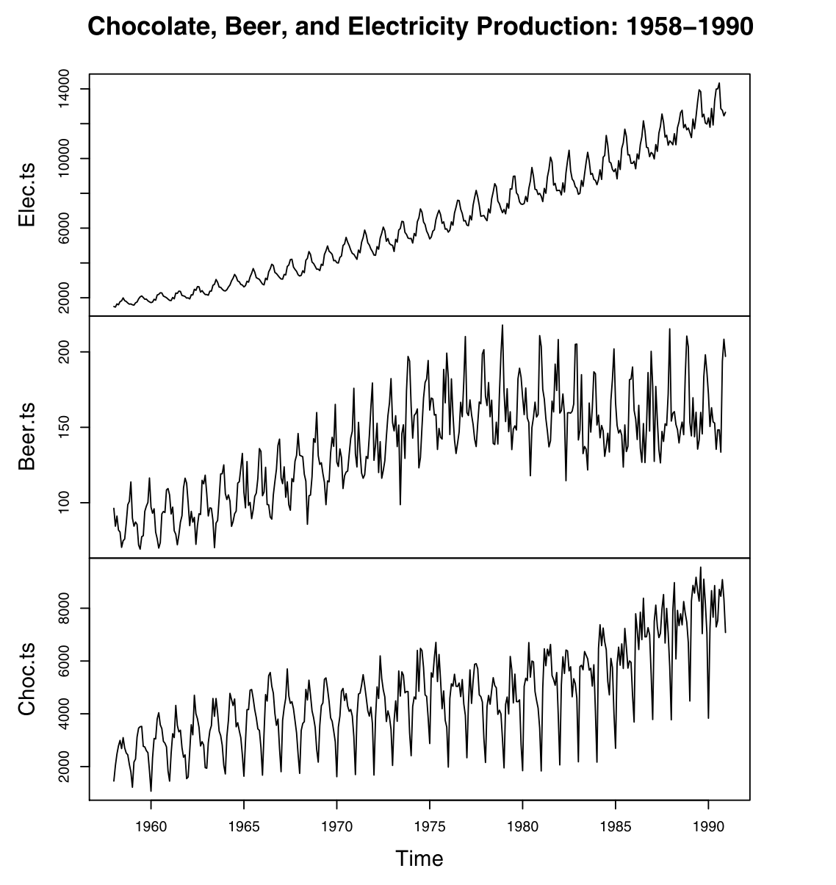
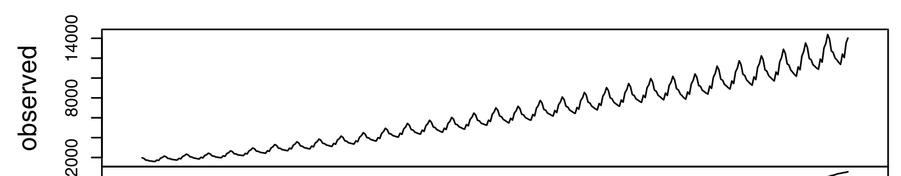

Autocorrelation Practice#
Source: Tidy Time Series. Rob Hyndman. Rstudio 2020
Source: Introductory Time Series in R. Cowpertwait et al.
In this practice you will learn about lag and ACF plots and decomposition. Create a new rmarkdown. Make sure you are able to execute code provided in code blocks. Read supporting description, R doucmentation. If you need more claarification, please reach out in Piazza.
TS Objects#
The function ts is built-in and is used to create time-series objects.
# Code block 1:
ts(1:10, frequency = 4, start = c(1959, 2)) # start from 2nd Quarter of 1959
 Upload wave.dat data and create plot. You can also slice time series. waveht is the column name. Data height (mm relative to still water level) is measured at the centre of a wave tank.
Upload wave.dat data and create plot. You can also slice time series. waveht is the column name. Data height (mm relative to still water level) is measured at the centre of a wave tank.
# Code block 2:
wave <- read.table('wave.dat',header=T)
waveht = ts(wave)
plot(ts(waveht))
plot(ts(waveht[1:60]))


Note
The upper plot shows the entire time series. There are no outlying values. The lower plot is of the first sixty wave heights. We can see that there is a tendency for consecutive values to be relatively similar and that the form is like a rough sea, with a quasi-periodicity but no fixed frequency.
Download Electicity, beer and chocolate data cbe.dat. We are going to create 3 time series. You can also calculate correlation between time series using cor():
# Code block 3:
CBE <- read.table(cbe.dat, header = T))
Elec.ts <- ts(CBE[, 3], start = 1958, freq = 12)
Beer.ts <- ts(CBE[, 2], start = 1958, freq = 12)
Choc.ts <- ts(CBE[, 1], start = 1958, freq = 12)
plot(cbind(Elec.ts, Beer.ts, Choc.ts))
cor(Elec.ts,Beer.ts)

Note
The plots show increasing trends in production for all three goods, partly due to the rising population in Australia.
ACF#
The function acf computes and estimates of the autocovariance or autocorrelation function.
The autocorrelations of x are stored in the vector acf(x)\$acf, with the lag k autocorrelation located in acf(x)\$acf[k+1]. For example, the lag 1 autocorrelation for waveht is
# Code block 4:
acf(waveht)$acf[2] # 0.47
Note
The first entry, acf[1], is always equals 1.
Decomposition#
In R, the function decompose() decomposes a time series into seasonal, trend and irregular components using moving averages. Deals with additive or multiplicative seasonal component.
Additive model or multiplicative components: If the seasonal effect tends to increase as the trend increases, a multiplicative model may be more appropriate. If not - additive model can be used: $\( X_{t} = trend_{t} + Season + Noise (error) \)$
Below we are using both additive and multiplicative decomposition plots for Electricity data. ts.plot superposes seasonal effects on trends by using lty (different line types)
# Code block 5:
plot(decompose(Elec.ts))
Elec.decom <- decompose(Elec.ts, type = "mult")
plot(Elec.decom)
Trend <- Elec.decom$trend
Seasonal <- Elec.decom$seasonal
ts.plot(cbind(Trend, Trend * Seasonal), lty = 1:2)

Note
For Electricity data, the multiplicative model seems more appropriate than the additive model because the variance of the original series and trend increase with time.
Correlogram#
The main use is to detect autocorrelations in the time series after we have removed an estimate of the trend and seasonal variation.
# Code block 6
data(AirPassengers)
AP <- AirPassengers
AP.decom <- decompose(AP, "multiplicative")
plot(AP.decom)
Usually a trend in the data will show in the correlogram as a slow decay in the autocorrelations. This can be seen in the correlogram for the air passenger bookings acf(AirPassengers). If there is seasonal variation, seasonal spikes will be superimposed on this pattern.
# Code block 7
acf(AirPassengers)
Lag of 1 year reflects a positive linear relationship between pairs of variables (xt, xt+12) separated by 12-month periods.